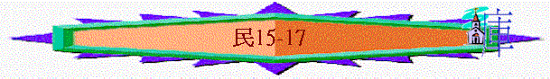

|
超越障礙、邁向豐盛（１－３６） |
|||||||||||||||||
|
預備起行 1-10:10 |
踏上征途10:11-14:45 |
曠野飄流 15-20:13 |
超越障礙 20:14-25:18 | 邁向豐盛 26-36 | |||||||||||||
|
組 織 |
生 活 |
基 礎 |
順 利 |
軟 弱 |
失 敗 |
教 育 |
叛 逆 |
定 例 |
管 教 |
環 境 |
軟 弱 |
咒 詛 |
引 誘 |
組 織 |
軍 令 |
回 顧 |
分 地 |
三.曠野飄流（１５－２０：１３）
＊飄流行程
「亞瑪力人和迦南人住在谷中，明天你們要轉回，從紅海的路往曠野去。」民14:25
「此後，我們轉回，從紅海的路往曠野去，是照耶和華所吩咐我的。我們在西珥山繞行了許多日子。」申2:1
「正月間，以色列全會眾到了尋的曠野，就住在加低斯。米利暗死在那裡，就葬在那裡。」民20:1
加低斯à轉回à在西珥山繞行à加低斯
＊啟發問題：以色列人四十年在曠野飄流，意義何在？
人在神的管教中，是否學到功課？
神在管教中，是否完全放棄人？
人在飄流的日子，是否可以放縱？
＊真理應用：人在失敗中仍有使命，人仍需謹守
＊經文結構：15章耶和華的曉論
----延續的教育
16-17選民的歷史 ----延續的叛逆
18-19耶和華的曉諭 ----延續的定例
20:1-13選民的歷史 ----延續的管教
1.延續的教育(15)
「……你們到了我所賜給你們居住的地」(15:1)
「你們有錯誤的時候，不守耶和華所曉諭摩西的這一切命令。」15:21
〜很多「世世代代」的字眼(15:14、15、21、23、37)
〜人在受管教的日子，不等於放縱自己，仍要謹守神的吩咐，並且有責任延續教育下一代子民，世世代代遵守神的話，這是他們飄流時的責任，而第一重要的教育是獻祭(對神的回應)
A.獻祭的定例(v1-21)
a.火祭----甘心
(1)基本的火祭
「若願意從牛群羊群中取牛羊作火祭，獻給耶和華，無論是燔祭是平安祭，為要還特許的願，或是作甘心祭，或是逢你們節期獻的，都要奉給耶和華為馨香之祭。」15:3
(A)甘心的獻上
〜為了還願、酬恩，是甘心的
(B)全然的奉獻
〜是燔祭，全燒的
(2)馨香的火祭
(a)生活的擺上----素祭
「那獻供物的就要將細麵伊法十分之一，並油一欣四分之一，調和作素祭，獻給耶和華。」15:4
〜細麵與酒是生活的必須品
(b)生命的傾倒----奠祭
「無論是燔祭是平安祭，你要為每隻綿羊羔，一同預備奠祭的酒一欣四分之一。」15:5
〜將酒澆在神前，新約澆奠，即生命的離去，將生命傾倒
(c)按力的加添
〜素祭的細麵與油及奠祭的酒份量是按祭牲的貴重而調較，有所不同(如下圖)
b.搖祭----必要
「耶和華對摩西說：「你曉諭以色列人說：你們到了我所領你們進去的那地，吃那地的糧食，就要把舉祭獻給耶和華。你們要用初熟的麥子磨麵，做餅當舉祭奉獻；你們舉上，好像舉禾場的舉祭一樣。你們世世代代要用初熟的麥子磨麵，當舉祭獻給耶和華。」15:17-21
(1)獻上的時間
「你曉諭以色列人說：你們到了我所領你們進去的那地，吃那地的糧食，就要把舉祭獻給耶和華。」15:18-19
〜當入到豐盛地，領受神恩後，不可忘恩，要獻上供物感謝神
(2)獻上的供物
「你們要用初熟的麥子磨麵，作餅當舉祭奉獻……」15:20
〜將初熟最好的先獻予神
B.犯罪的處理(v22-36)
a.無意的錯誤----尋求贖罪之法
(1)全會眾：馨香的火祭
+ 公山羊作贖罪祭
「你們有錯誤的時候，不守耶和華所曉諭摩西的這一切命令，就是耶和華藉摩西一切所吩咐你們的，自那日以至你們的世世代代，若有誤行，是會眾所不知道的，後來全會眾就要將一隻公牛犢作燔祭，並照典章把素祭和奠祭一同獻給耶和華為馨香之祭，又獻一隻公山羊作贖罪祭。祭司要為以色列全會眾贖罪，他們就必蒙赦免，因為這是錯誤。他們又因自己的錯誤，把供物，就是向耶和華獻的火祭和贖罪祭，一並奉到耶和華面前。以色列全會眾和寄居在他們中間的外人就必蒙赦免，因為這罪是百姓誤犯的。」15:22-26
〜如無意的，後來才知，不可不處理，要尋求贖罪之法
(2)一人：一歲的母山羊作贖罪祭
b.有意的干犯----必從民中剪除
「但那擅敢行事的，無論是本地人是寄居的，他褻瀆了耶和華，必從民中剪除。因他藐視耶和華的言語，違背耶和華的命令，那人總要剪除；他的罪孽要歸到他身上。」15:30-31
〜如明知故犯的，是藐視神，要被剪除
c.實質的例子
「以色列人在曠野的時候，遇見一個人在安息日撿柴。遇見他撿柴的人，就把他帶到摩西、亞倫並全會眾那裡，將他收在監內；因為當怎樣辦他，還沒有指明。耶和華吩咐摩西說：「總要把那人治死；全會眾要在營外用石頭把他打死。」15:32-35
C.成聖的教育
「你吩咐以色列人，叫他們世世代代在衣服邊上做繸子，又在底邊的繸子上釘一根藍細帶子。你們佩帶這繸子，好叫你們看見就記念遵行耶和華一切的命令，不隨從自己的心意、眼目行邪淫，像你們素常一樣；使你們記念遵行我一切的命令，成為聖潔，歸與你們的神。」15:38-40
a.時刻記念神的命令
〜繸子是時刻可以被見的，人見到繸子，提醒他們遵守神的話
b.徹底遵守神的話語
〜是一切的命令，不是單是一兩條誡命！
2.延續的叛逆(16-17)
＊特點：選民悖逆過程：積壓的不滿à領袖們引發à全會眾的擴散à延續的怨言
A.可拉黨引發的悖逆
a.可拉黨的悖逆
「利未的曾孫、哥轄的孫子、以斯哈的兒子可拉，和流便子孫中以利押的兒子大坍、亞比蘭，與比勒的兒子安，並以色列會中的二百五十個首領，就是有名望選入會中的人，在摩西面前一同起來，」16:1-2
(1)錯看屬靈事
à屬靈的福份是平等
「……你們擅自專權！全會眾個個既是聖潔，耶和華也在他們中間，你們為什麼自高，超過耶和華的會眾呢？」16:3
〜他們要求平等，為何彼此也是利未支派，亞倫摩西卻可成為領袖！
à現在的職份是小事
「耶和華又使你和你一切弟兄利未的子孫一同親近他，這豈為小事？你們還要求祭司的職任嗎？」16:10
〜不滿足現在的職份，以為親近神只是小事
(2)嫉妒神僕人
「他們又在營中嫉妒摩西和耶和華的聖者亞倫。」詩106:16
(3)積壓心中忿
「並且你沒有將我們領到流奶與蜜之地，也沒有把田地和葡萄園給我們為業。難道你要剜這些人的眼睛嗎？我們不上去！」16:14
〜過去在加低斯中受管教，心仍有不甘，積？了很多不滿，並在此事中發洩出來！
(4)藐視耶和華
「……你們就明白這些人是藐視耶和華了。」v30
(a)藐視神的安排
(b)藐視神的僕人
b.神僕們的典範
(1)面對攻擊----全然倚靠
「並且你沒有將我們領到流奶與蜜之地，也沒有把田地和葡萄園給我們為業。難道你要剜這些人的眼睛嗎？我們不上去！」16:14
(2)面對指責----坦然無愧
「摩西就甚發怒，對耶和華說：「求你不要享受他們的供物。我並沒有奪過他們一匹驢，也沒有害過他們一個人。」16:15
(3)面對仇敵----愛心哀求
「你們離開這會眾，我好在轉眼之間把他們滅絕。摩西、亞倫就俯伏在地，說：「神，萬人之靈的神啊，一人犯罪，你就要向全會眾發怒嗎？」」16:21-22
c.神公義的明証
(1)地開口的明証
「這些人死若與世人無異，或是他們所遭的與世人相同，就不是耶和華打發我來的。倘若耶和華創作一件新事，使地開口，把他們和一切屬他們的都吞下去，叫他們活活地墜落陰間，你們就明白這些人是藐視耶和華了。」16:29-30
à神僕們的是
----位份不是擅取
à可拉黨的不是
----他們藐視耶和華
à要作一件從未發生之事，他們知道是神作的，神親自用奇異的管教表明公義
(2)爐包壇的記號
「又有火從耶和華那裡出來，燒滅了那獻香的二百五十個人。耶和華曉諭摩西說：「你吩咐祭司亞倫的兒子以利亞撒從火中撿起那些香爐來，把火撒在別處，因為那些香爐是聖的。把那些犯罪、自害己命之人的香爐，叫人錘成片子，用以包壇。那些香爐本是他們在耶和華面前獻過的，所以是聖的，並且可以給以色列人作記號。」於是祭司以利亞撒將被燒之人所獻的銅香爐拿來，人就錘出來，用以包壇，給以色列人作紀念，使亞倫後裔之外的人不得近前來在耶和華面前燒香，免得他遭可拉和他一黨所遭的。這乃是照耶和華藉著摩西所吩咐的。」16:35-40
à不是人人可如此親近神
〜二百五十個獻香的人被火焚燒，神要用被燒之人所獻香爐錘出包壇，給後人知道不是人人可如此親近神！
B.全會眾延伸的怨言(16:41-17:13)
「第二天，以色列全會眾都向摩西、亞倫發怨言說：「你們殺了耶和華的百姓了。」」16:41
a.百姓不滿的攻擊
(1)不滿同胞被殺----錯用感情
〜因為同胞的被殺，激起他們的不滿情緒來！
(2)不滿神僕作為----錯看領袖
〜他們以為是摩西亞倫殺了他們的同胞，其實是神自己的管教作為！
b.屬靈忿怒的來臨
「你們離開這會眾，我好在轉眼之間把他們滅絕。」他們二人就俯伏於地。」16:45
「除了因可拉事情死的以外，遭瘟疫死的，共有一萬四千七百人。」16:49
C.亞倫燒香的贖罪
WHY用香爐？爐的作用何在？
(1)香的作用
「願我的禱告如香陳列在你面前！願我舉手祈求，如獻晚祭！」詩141:2
〜將馨香帶到神面前，如禱告樣
(2)贖罪日的香爐
〜利16:記載在贖罪日時，祭司要燒香為要遮掩施恩罪，遮掩神的忿怒，人的罪惡
(3)啟示錄的金香爐
〜啟5記載代表眾聖徒的祈禱
(4)亞倫的香爐
(A)祈求
(B)贖罪
(C)遮掩
D.神杖開花的止息
「你曉諭以色列人，從他們手下取杖，每支派一根；從他們所有的首領，按著支派，共取十二根。你要將各人的名字寫在各人的杖上，並要將亞倫的名字寫在利未的杖上，因為各族長必有一根杖。你要把這些杖存在會幕內法櫃前，就是我與你們相會之處。後來我所揀選的那人，他的杖必發芽。這樣，我必使以色列人向你們所發的怨言止息，不再達到我耳中。」17:2-5
「第二天，摩西進法櫃的帳幕去。誰知利未族亞倫的杖已經發了芽，生了花苞，開了花，結了熟杏。」17:8
〜神單使亞倫的杖開花，表明他是神所揀選的那人(成為祭司、領袖)，用作止息他們爭權嫉妒的紛爭。